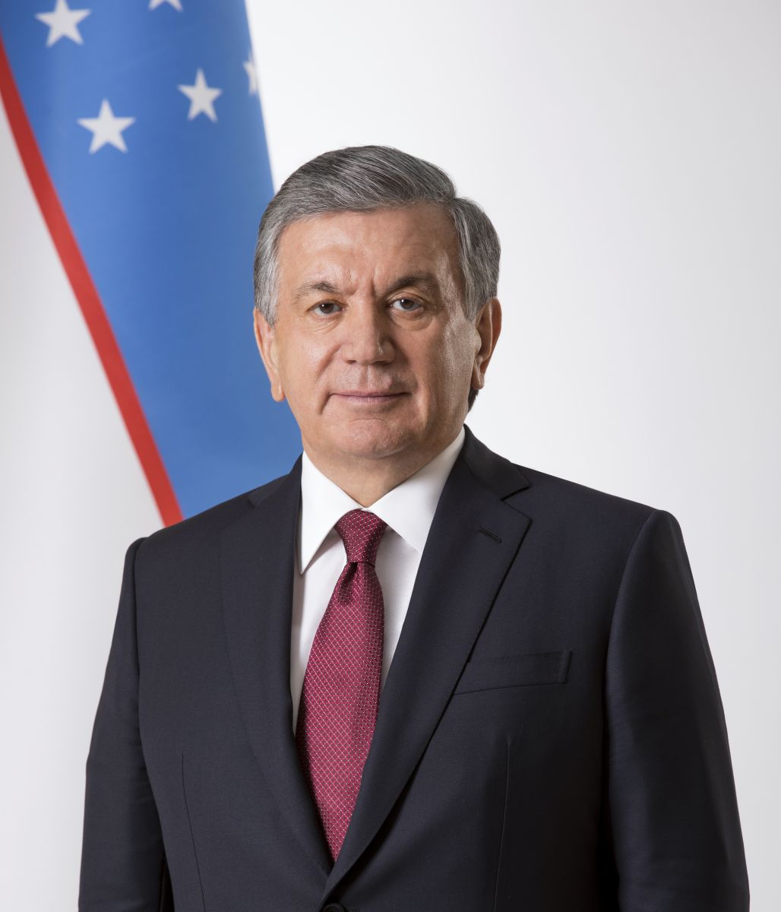

Nearly 100,000 Uzbeks Returned From Russia in 10 Days
According to the Migration Agency, 96,415 citizens returned home between Aug. 25 and Sept. 5 — against the backdrop of Russia's tightening migration policy.

According to Uzbekistan's Migration Agency, 96,415 Uzbek citizens returned home from Russia during the ten days between Aug. 25 and Sept. 5, 2026. Labor migration over that period fell 13.2 percent compared with a year earlier.
What changed
The wave of returns is tied to Russia's tightening of migration controls. Since February 2025, foreign nationals without legal status have been entered into a registry of “controlled persons.” Those added to the registry face a range of restrictions, including on banking transactions and on registering property and vehicles.
Observers also cite the ruble's exchange rate, the war in Ukraine and concerns about migrants' safety among the reasons for returning.
What the numbers show
- Returned in 10 days: 96,415 people
- Labor migration: −13.2%
- Q1 2026 remittances: $3.8 billion (+13%)
- Russia's share of total remittances: 77.6% → 72.4%
In the first quarter of 2026, $3.8 billion in remittances crossed the border into Uzbekistan — 13 percent more than a year earlier. Russia's share of total transfers, however, fell from 77.6 percent to 72.4 percent, a sign that sources of income are gradually diversifying.
Over the 10 days, 6,413 inquiries were received; 5,467 citizens were given practical assistance.
— Migration Agency data (Uzbekistan)
An important caveat
The agency has not published full comparative figures for the same period last year. For that reason, this indicator on its own should not be read as evidence of a “mass exodus” — it is official statistics recorded for one specific period.